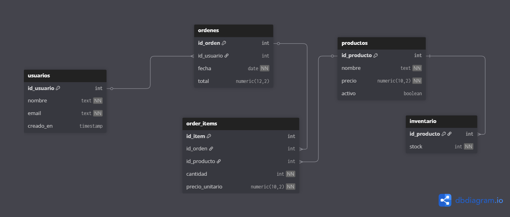

Actividad de Aprendizaje – SQL
Evidencia de consultas SQL ejecutadas en PostgreSQL utilizando pgAdmin 4 y VS Code.
Modelado de base de datos para un mercado digital, creación de tablas e inserción de datos de prueba.
1. Diagrama Entidad Relacion Mercado Digital
2. Script SQL del proyecto
Cargando SQL...